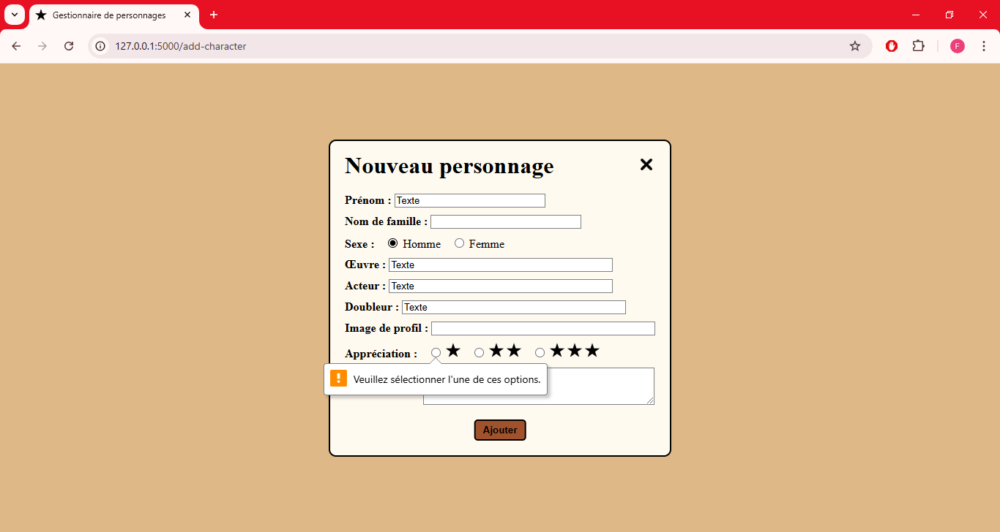

Illustrations :

Capture 1 :
Page principale avec liste des personnages
Capture 2 :
Boutons d'édition et de suppression en survolant un personnage
Capture 3 :
Page de création de compte utilisateur
Capture 4 :
Page de connexion
Capture 5 :
Page d'ajout de personnage

Capture 6 :
Message si absence d'une propriété obligatoire
Capture 7 :
Page d'édition préremplie d'un personnage
Capture 8 :
Page de suppression de personnage
Capture 9 :
Démonstration de tri par appréciation (avant le tri)
Capture 10 :
Démonstration de tri par appréciation (après le tri)
Capture 11 :
Exemple d'utilisation (avant le tri)
Capture 12 :
Exemple d'utilisation (après le tri)